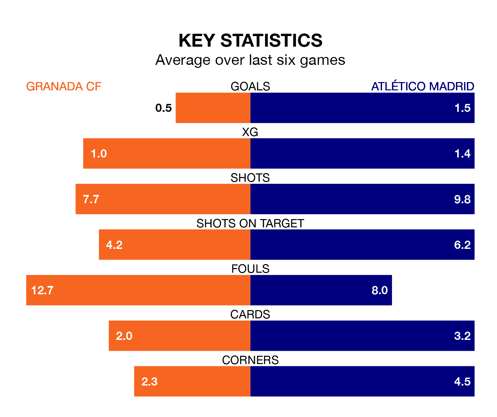

Atlético Madrid are strong favourites to take all three points despite Granada CF's home advantage in Monday's late match at the Estadio Nuevo Los Cármenes.
*Betting Company* are offering odds of 1.77 on Atlético sealing the win, with the visitors sitting fifth in La Liga table.
Granada, who are 19th in the league and 27 points behind Atlético, are priced at 4.83 to win. A draw is set at 4.11.
With 39 goals in 19 games so far this season, Atlético are the league's third-highest scorers with 2.1 goals per game. And they are conceding fewer than average, letting in 23 goals at a rate of 1.2 per game.
Granada, meanwhile, are below average scorers, with 1.1 goals per game, compared to a league average of 1.3. They have conceded 2.0 goals per game.
In Alvaro Morata, the visitors have one of the league's most on-form strikers so far this season. He has notched 12 goals in 18 appearances, to sit second in the scoring charts.
The home side's top scorers, with six goals each, are Bryan Zaragoza and Myrto Uzuni.
In the last 10 years, Granada and Atlético have played each other on 14 occasions. Granada won one of them, Atlético 10, and they drew three times.
On average, Granada scored 0.5 goals and Atlético 2.1 in those matches.
Their last meeting was on August 14, when Atlético won 3-1 at home.
Granada are in bad form in La Liga, with one win and a draw from their last six games.
With two wins and a draw over that period, Atlético's form is better – they have taken seven points from 18, compared to Granada's four.
Granada's last match was on January 13, a 1-0 loss against Real Betis.
Atlético lost 4-3 against Girona last time out, on January 3, with Morata Martín on the scoresheet.
Updated: 06:13 (UTC), 18/01/24